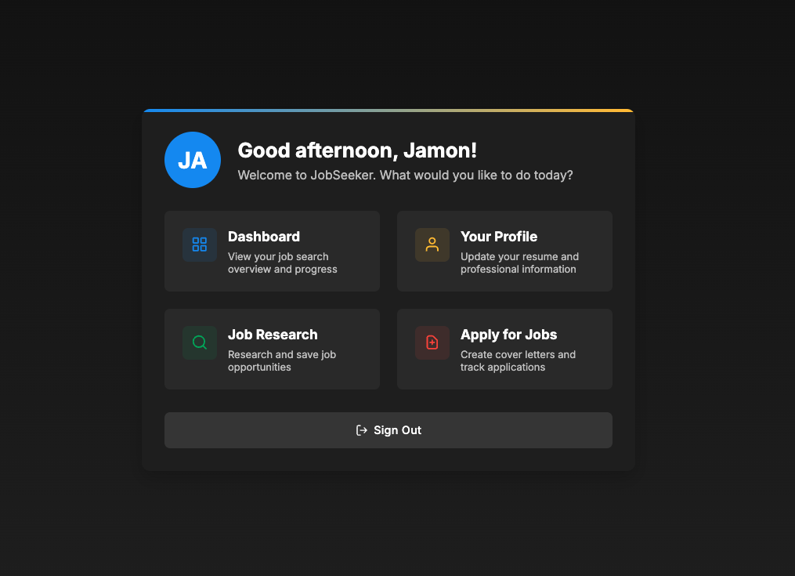
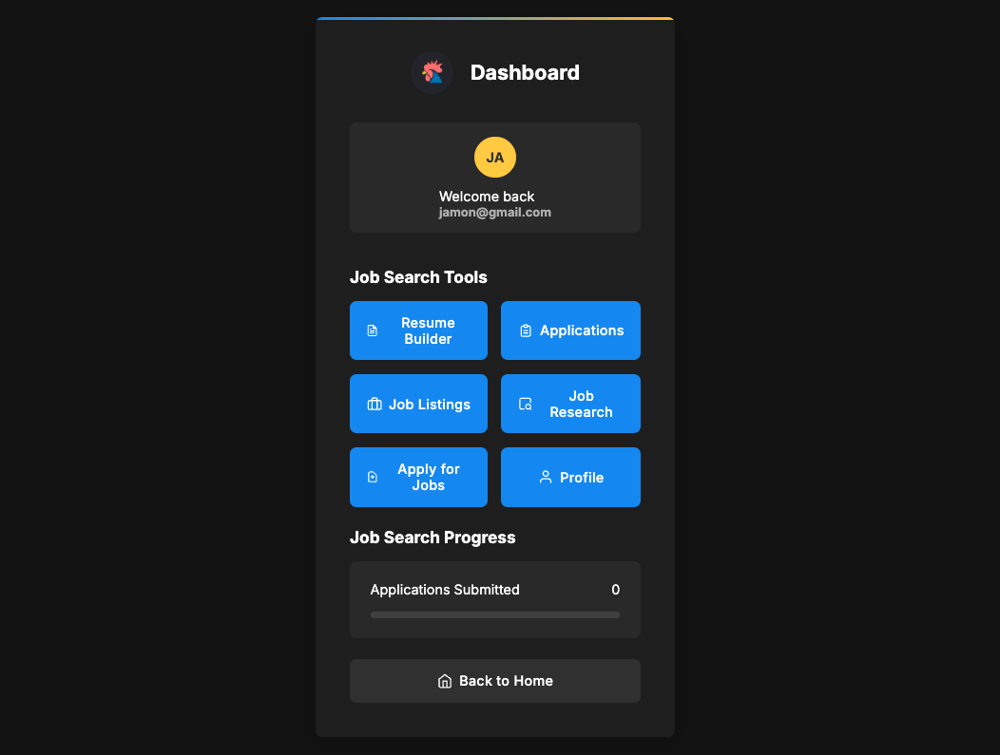
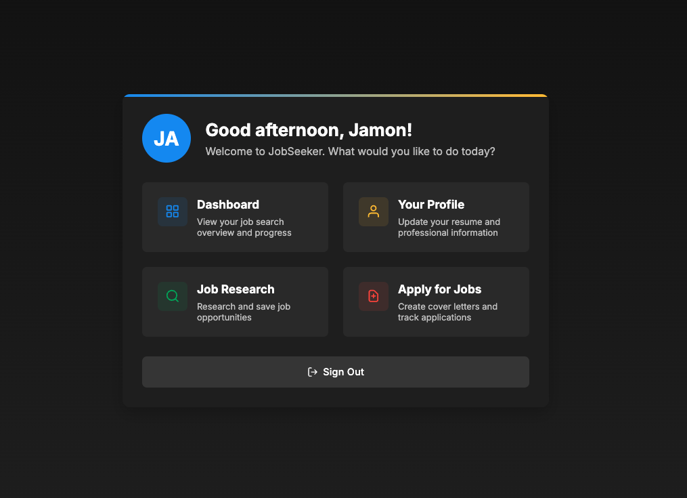
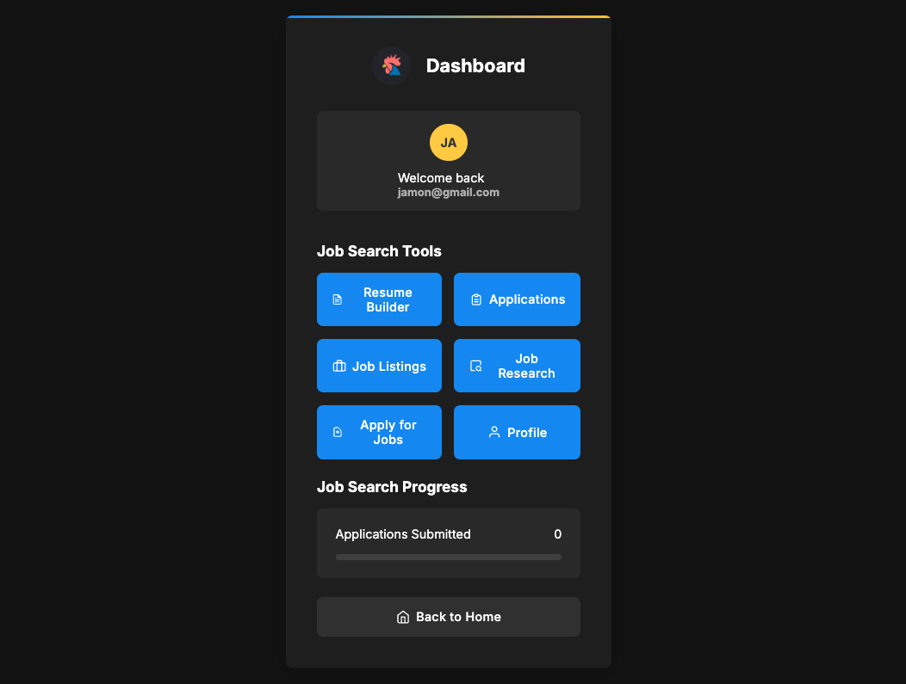

Project Overview
The Jobseeker-LangChain-CrewAI-Agent is a sophisticated multi-agent system designed to streamline and enhance the job application process. By leveraging the power of LangChain and CrewAI, this project implements a team of specialized AI agents that work together to analyze job postings, evaluate resumes, and generate tailored application materials.
Key Features
- Job posting analysis and extraction of key requirements
- Resume analysis to identify your skills and experience
- ATS (Applicant Tracking System) evaluation to score your resume against job requirements
- Company research to gather information about the employer
- Generation of tailored cover letters
- Creation of optimized resumes targeted to specific job postings
- Knowledge graph creation using Neo4j (optional)
How It Works
The system employs a crew of specialized AI agents, each with a specific role in the job application process:
- Job Analyzer Agent: Extracts key requirements, skills, and qualifications from job postings
- Resume Analyzer Agent: Evaluates your resume to identify relevant skills and experience
- ATS Evaluator Agent: Scores your resume against the job requirements to determine compatibility
- Company Researcher Agent: Gathers information about the employer to personalize application materials
- Cover Letter Generator Agent: Creates tailored cover letters that highlight your relevant experience
- Resume Optimizer Agent: Customizes your resume to emphasize skills and experience relevant to the job
Technical Implementation
The project is built using Python and leverages several key technologies:
- CrewAI: Provides the framework for creating and coordinating multiple AI agents
- OpenAI API: Powers the language models used by the agents for text analysis and generation
- SerperDev API: Enables web search capabilities for company research
- Neo4j: Optional integration for creating knowledge graphs of job requirements and skills
Prerequisites
- Python 3.8+
- OpenAI API key
- SerperDev API key (for web search capabilities)
- Neo4j database (optional, for knowledge graph features)
Project Images
 



Technologies Used
Python 3.8+
CrewAI
OpenAI API
SerperDev API
Neo4j
LangChain